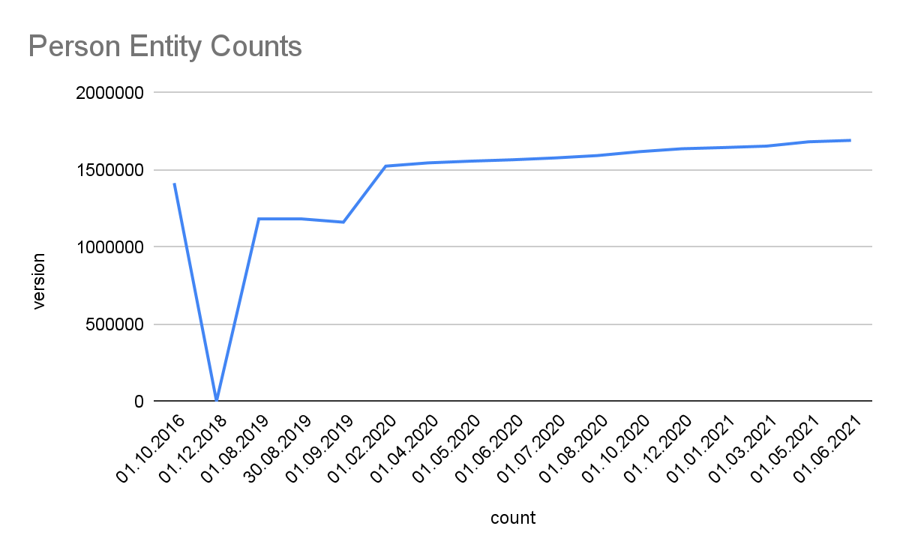

DBpedia Snapshot 2021-06 Release 1
What is the “DBpedia Snapshot” Release? 1
Timeline 1
This release has been associated with many names in the past: "DBpedia Core", "EN DBpedia", and — most confusingly — just "DBpedia". In fact, it is a combination of —
EN Wikipedia data — A small, but very useful, subset (~ 1 Billion triples or 14%) of the whole DBpedia extraction using the DBpedia Information Extraction Framework (DIEF), comprising structured information extracted from the English Wikipedia plus some enrichments from other Wikipedia language editions, notably multilingual abstracts in ar, ca, cs, de, el, eo, es, eu, fr, ga, id, it, ja, ko, nl, pl, pt, sv, uk, ru, zh .
Links — Community-contributed cross-references and owl:sameAs links to other linked data sets on the Linked Open Data (LOD) Cloud that allow to effectively find and retrieve further information from the largest, decentral, change-sensitive knowledge graph on earth that has formed around DBpedia since 2007.
Community extensions — Community-contributed extensions such as additional ontologies and taxonomies.
DBpedia Snapshot releases are scheduled for the 15th of February, May, July, and October (with +/- 5 days tolerance), and are named using the same date convention as the Wikipedia Dumps that served as the basis for the release. An example of the release timeline is shown below:
June 6–8 |
June 8–20 |
June 20–July 10 |
July 10–20 |
Wikipedia dumps for June 1 become available on https://dumps.wikimedia.org/ |
Download and extraction with DIEF |
Post-processing and quality-control period |
Deployment as Linked Data and SPARQL endpoint |
Given the timeline above, the EN Wikipedia data of DBpedia Snapshot has a lag of 1-4 months. We recommend the following strategies to mitigate this:
DBpedia Snapshot as a kernel for Linked Data: Following the Linked Data paradigm, we recommend using the Linked Data links to other knowledge graphs to retrieve high-quality and recent information. DBpedia’s network consists of the best knowledge engineers in the world, working together, using linked data principles to build a high-quality, open, decentralized knowledge graph network around DBpedia. Recency and change-sensitivity are two of the greatest challenges of our time, and can only be overcome by linking data across databases. Copying data into a central database eventually and inevitably faces serious issues of co-evolution and scalability.
DBpedia Live: Wikipedia is unmistakingly the richest, most recent body of human knowledge and source of news in the world. DBpedia Live is just minutes behind edits on Wikipedia, which means that as soon as any of the 120k Wikipedia editors presses the “save” button, DBpedia Live will extract fresh data and update. DBpedia Live is currently in tech preview status and we are working towards a high-available and reliable business API with support. DBpedia Live consists of the DBpedia Live Sync API (for syncing into any kind of on-site databases), Linked Data and SPARQL endpoint.
Latest-Core is a dynamically updating Databus Collection. Our automated extraction robot “MARVIN” publishes monthly dev versions of the full extraction, which are then refined and enriched to become Snapshot.
We would like to acknowledge the excellent work of Wikipedia editors (~46k active editors for EN Wikipedia), who are ultimately responsible for collecting information in Wikipedia’s infoboxes, which are refined by DBpedia’s extraction into our knowledge graphs. Wikipedia’s infoboxes are steadily growing each month and according to our measurements grow by 150% every three years. EN Wikipedia’s inboxes even doubled in this timeframe. This richness of knowledge drives the DBpedia Snapshot knowledge graph and is further potentiated by synergies with linked data cross-references. Statistics are given below.
Linked Data is a principled approach to publishing RDF data on the Web that enables interlinking data between different data sources, courtesy of the built-in power of Hyperlinks as unique Entity Identifiers.
HTML pages comprising Hyperlinks that confirm to Linked Data Principles is one of the methods of interacting with data provided by the DBpedia Snapshot, be it manually via the web browser or programmatically using REST interaction patterns via https://dbpedia.org/resource/{entity-label} pattern. Naturally, we encourage Linked Data interactions, while also expecting user-agents to honor the cache-control HTTP response header for massive crawl operations. Instructions for accessing Linked Data, available in 10 formats.
This service enables some astonishing queries against Knowledge Graphs derived from Wikipedia content. The Query Services Endpoint that makes this possible is identified by http://dbpedia.org/sparql, and it currently handles 7.2 million queries daily on average. See powerful queries and instructions (incl. rates and limitations).
An effective Usage Pattern is to filter a relevant subset of entity descriptions for your use case via SPARQL and then combine with the power of Linked Data by looking up (or de-referencing) data via owl:sameAs property links en route to retrieving specific and recent data from across other Knowledge Graphs across the massive Linked Open Data Cloud.
Additionally, DBpedia Snapshot dumps and additional data from the complete collection of datasets derived form Wikipedia are provided by the DBpedia Databus for use in your own SPARQL-accessible Knowledge Graphs.
This Snapshot Release was built with DBpedia Ontology (DBO) version: https://databus.dbpedia.org/ontologies/dbpedia.org/ontology--DEV/2021.07.09-070001 We thank all DBpedians for the contribution to the ontology and the mappings. See documentation and visualisations , class tree and properties, wiki.
Overview.
Overall the current Snapshot Release contains more than 700M facts (triples).
The DBpedia ontology is the heart of DBpedia. The DBpedia community is continuously contributing to the DBpedia ontology schema and the DBpedia infobox-to-ontology mappings by actively using the DBpedia Mappings Wiki.
The current Snapshot Release utilizes a total of 55k properties, whereas 1372 are defined by the DBpedia ontology.
Classes. Knowledge in Wikipedia is constantly growing at a rapid pace. We use the DBpedia Ontology Classes to measure the growth: Total number in this release (in brackets we give: a) growth to previous release, which can be negative temporarily and b) growth compared to Snapshot 2016-10):
Persons: 1682299 (1.69%, 5.84%)
Places: 992381 (0.44%, 2413%), including but not limited to 584938 (-0.0%, 5465%) populated places
Works 593689 (0.54%, 6017%), including, but not limited to
153984 (-0.7%, 35.2%) music albums
140766 (0.79%, 1453%) films
24198 (1.17%, 1120%) video games
Organizations: 341609 (0.69%, 1070%), including but not limited to
84464 (0.61%, 116.%) companies
63809 (0.17%, 6380%) educational institutions
Species: 169874 (-5.9%, 2831%)
Plants: 11952 (-15.%, 164.%)
Diseases: 8637 (0.16%, 596.%)
Detailed Growth of Classes: The image below shows the detailed growth for one class. Click on the links for other classes: Place, PopulatedPlaces, Work, Album, Film, VideoGame, Organisation, Company, EducationalInstitution, Species, Species, Plant, Disease
Links.
Cross-Linking is an important feature of the Linked Open Data Cloud.
Total 61,717,519
To 178 targets
Top 11
6,672,052 global.dbpedia.org
5,380,836 www.wikidata.org
4,308,772 yago-knowledge.org
2,561,963 viaf.org
1,989,632 fr.dbpedia.org
1,851,182 de.dbpedia.org
1,563,230 it.dbpedia.org
1,495,866 es.dbpedia.org
1,283,672 pl.dbpedia.org
1,274,002 ru.dbpedia.org
1,203,247 d-nb.info
Top 10 Without DBpedia namespaces
5,380,836 www.wikidata.org
4,308,772 yago-knowledge.org
2,561,963 viaf.org
1,203,247 d-nb.info
596,134 umbel.org
559,821 sws.geonames.org
431,830 data.bibliotheken.nl
430,839 www.w3.org (wn20)
301,483 musicbrainz.org
104,433 linkedgeodata.org
All extracted files are reachable via the DBpedia account on the Databus. The Databus has two main structures:
In groups, artifacts, version, similar to software in Maven: https://databus.dbpedia.org/$user/$group/$artifact/$version/$filename
In Databus collections that are SPARQL queries over https://databus.dbpedia.org/yasui filtering and selecting files from these artifacts.
Snapshot Download. For downloading DBpedia Snapshot, we prepared this collection, which also includes detailed releases notes:
https://databus.dbpedia.org/dbpedia/collections/dbpedia-snapshot-2021-06
The collection is roughly equivalent to http://downloads.dbpedia.org/2016-10/core/
Collections can be downloaded many different ways, some download modalities such as bash script, SPARQL and plain URL list are found in the tabs at the collection. Files are provided as bzip2 compressed n-triples files. In case you need a different format or compression, you can also use the “Download-As” function of the Databus Client (GitHub), e.g. -s $collection -c gzip would download the collection and convert it to GZIP during download.
Replicating DBpedia Snapshot on your server can be done via Docker, see https://hub.docker.com/r/dbpedia/virtuoso-sparql-endpoint-quickstart
git clone https://github.com/dbpedia/virtuoso-sparql-endpoint-quickstart.git
cd virtuoso-sparql-endpoint-quickstart
COLLECTION_URI=https://databus.dbpedia.org/dbpedia/collections/dbpedia-snapshot-2021-06 VIRTUOSO_ADMIN_PASSWD=password docker-compose up
Download files from the whole DBpedia extraction. The whole extraction consists of approx. 20 Billion triples and 5000 files created from 140 languages of Wikipedia, Commons and Wikidata. They can be found in https://databus.dbpedia.org/dbpedia/(generic|mappings|text|wikidata)
You can copy-edit a collection and create your own customized (e.g.) collections via “Actions" -> "Copy Edit" , e.g. you can Copy Edit the snapshot collection above, remove some files that you do not need and add files from other languages. Please see the Rhizomer use case: Best way to download specific parts of DBpedia. Of course, this only refers to the archived dumps on the Databus for users who want to bulk download and deploy into their own infrastructure. Linked Data and SPARQL allow for filtering the content using a small data pattern.